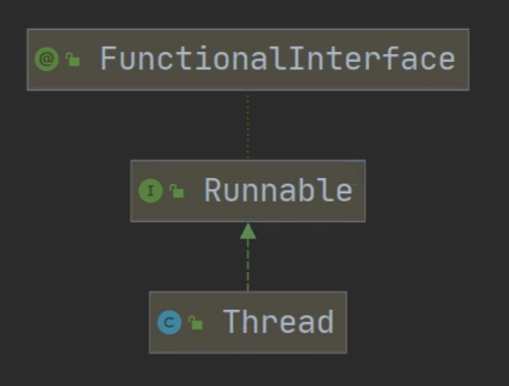
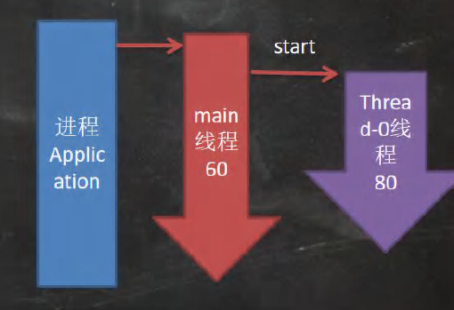
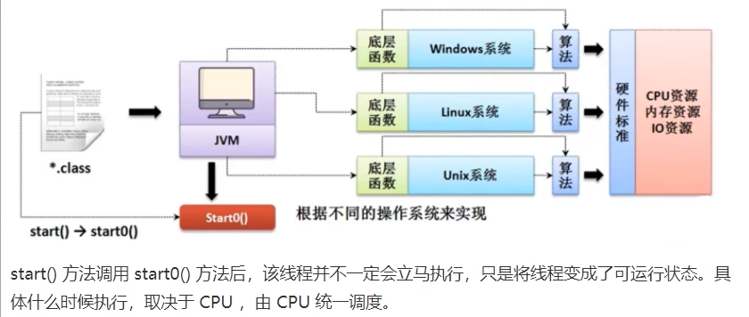
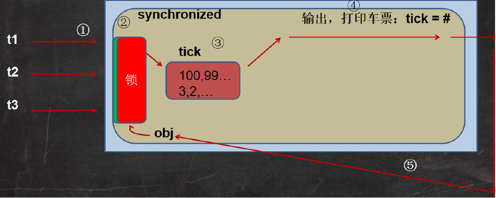

17多线程基础
17.1线程相关概念¶
2022年7月14日
23:13
-
程序：是为了完成特定任务, 用某种语言编写的一组指令的集合
-
进程: 1. 进程是指==运行中的程序==，比如我们使用QQ，就启动了一个进程，操作系统就会为该进程分配内存空间。当我们使用迅雷，又启动了一个进程,操作系统将为迅雷分配新的内存空间。 2. 进程是程序的一次执行过程,或是正在运行的一个程序。 3. 是一个动态过程, 有它自身的产生、存在和消亡的过程
-
什么是线程 1. 线程是由==进程创建==的, 是进程的一个实体 2. 一个进程可以拥有多个线程
-
其他相关概念 1. 单线程: 在同一时刻, 只允许执行一个线程 2. 多线程: 在同一时刻, 执行多个线程
(如 一个QQ进程, 在同一时间可以打开多个聊天窗口, 一个迅雷进程, 可以同时下载多个文件)3. 并发: 同一时刻, 多个任务==交替执行==, 造成一种类似同时进行的错觉
<font color='orange'>(单核cpu实现的多任务就是并发)</font>4. 并行: 同一时刻, 多个任务==同时执行==。
<font color='orange'>(多核cpu可以实现并发和并行)</font>
17.2线程基本使用¶
2022年7月14日
23:39
- 创建线程的两种方式
java中线程的使用有两种方式
1. 继承Thread类, 重写run方法
2. 继承Runnable接口, 重写run方法
3.

Thread类本质上是一个是实现了Runnable接口的类
Thread类的使用¶
-
写一个类, 继承Thread类, 之后这个类就能够作为线程使用
-
重写该类的run方法, 写上自己的业务逻辑
class Cat extends Thread{ int times = 0; @Override public void run() { //重写run方法, 写上自己的业务逻辑 while (true) { //该线程每隔1s, 在控制台输出"喵喵, 我是小猫咪" System.out.println("喵喵, 我是小猫咪" + (++times) + " 线程名=" + Thread.currentThread().getName()); //让该线程休眠1秒 [ctrl+alt+t 快速添加环绕](杂项/#快捷键) try{ Thread.sleep(1000); } catch (InterruptedException e){ e.printStackTrace(); } if(times == 80) { break; //当times 到80, 退出while, 这时候线程也就退出 } } } } -
使用时创建一个对象
-
通过此对象使用start方法启动线程
如何理解多线程的启动¶

- 进程先调用main方法, 开启一个main线程, 在main方法内部调用
cat.start(), 开启一个Thread-0线程 (当前线程名可以通过Thread.currentThread().getName()获得) - 当main线程启动一个子线程Thread-0, 主线程不会阻塞, 会继续执行(两个线程交替执行(并发/并行))
- 主线程(main)结束, 子线程(Thread-0)并不会结束
start源码¶
-
```java
-
public synchronized void start() {
/* * This method is not invoked for the main method thread or "system" * group threads created/set up by the VM. Any new functionality added * to this method in the future may have to also be added to the VM. * * A zero status value corresponds to state "NEW". /
if (threadStatus != 0) throw new IllegalThreadStateException();
/ Notify the group that this thread is about to be started * so that it can be added to the group's list of threads * and the group's unstarted count can be decremented. /
group.add(this);
boolean started = false;
try { start0(); started = true; } finally { try { if (!started) { group.threadStartFailed(this); } } catch (Throwable ignore) {
/* do nothing. If start0 threw a Throwable then it will be passed up the call stack */} } } ```
-
-
核心: 调用
start0方法start0()方法是本地方法, 是JVM调用的方法, 底层由c/c++实现
-
真正实现多线程效果的方法是start0方法, 而非run()方法

Runnable接口的使用¶
-
为什么要使用Runnable接口: java是单继承的, 如果一个类已经继承了某一父类, 就无法继承Thread类来创建线程, 此时可以采用Runnable接口来创建线程
-
使用-静态代理: 1. 实现Runnable接口
2. 重写run()方法
3. 创建runnable实例
4. 创建Thread实例
5. 将Runnable实例放入Thread实例中
6. 通过线程实例控制线程的行为(运行，停止)，在运行时会调用Runnable接口中的run方法。
* <font color='#EE0000'>注意</font>: Java中真正能==创建新线程的只有Thread类对象== 通过实现Runnable的方式，最终还是通过Thread类对象来创建线程 -
使用-动态代理 1. 创建一个实现了Runnable接口的代理类, 用来起到Thread类的作用, 其余步骤与静态代理相似
2. 例子:
```java Tiger tiger = new Tiger();//实现了Runnable ThreadProxy threadProxy = new ThreadProxy(tiger); threadProxy.start(); //线程代理类, 模拟了一个极简的Thread类 class ThreadProxy implements Runnable{ private Runnable target = null; //属性, 类型是 Runnable @Override public void run() { if (target != null){ target.run(); //动态绑定, 运行类型是Tiger } } public ThreadProxy(Runnable target) { this.target = target; } public void start() { start0(); //此时实现多线程方法 } private void start0() { run(); } } ```3. 好像不是多线程, 摸了, 明天看看
4. Runnable源码: 仅定义了一个run()方法
```java package java.lang; public interface Runnable { public abstract void run(); } ``` -
继承Thread 与 ==实现Runnable==的区别
1. 从java的设计来看，通过继承Thread或者实现Runnable接口来创建线程本质上没有区别,从jdk帮助文档我们可以看到Thread类本身就实现了Runnable接口 2. 实现Runnable接口方式更加适合多个线程共享一个资源的情况，并且避免了单继承的限制,建议使用Runnable 3. [售票系统]，编程模拟三个售票窗口售票,分别使用继承 Thread和实现Runnable方式,并分析有什么问题 ? SellTicket.java * 因为是先判断, 后--, 多个线程同时访问ticketNum时, 会出现超卖的现象
-
线程终止 1. 当线程完成任务后, 会自动退出 2. 还可以通过==使用变量==来控制run方法退出的方式来停止线程, 即通知方式
例: ThreadExit.java3. 本质上就是 在main方法中, 修改run方法中的循环条件, 来退出run函数
17.3 线程常用方法¶
2022年7月17日
16:21
-
线程常用方法_part1¶
```java 1. setName(): 设置线程名称，使之与参数 name 相同 2. getName(): 返回该线程的名称 3. start(): 使该线程开始执行;Java虚拟机底层调用该线程的start0方法 4. run(): 调用线程对象run方法 5. setPriority(): 更改线程的优先级 6. getPriority(): 获取线程的优先级 7. sleep(): 在指定的毫秒数内让当前正在执行的线程休眠(暂停执行) 8. interrupt(): 中断线程 9. isAlive(): 判断当前线程是否存活 ``` -
注意事项和细节 1. start底层会创建新的线程, 调用run
- run只是一个方法, 并不会启动新线程2. 线程优先级的范围
```java //The minimum priority that a thread can have. public final static int MIN_PRIORITY = 1; //The default priority that is assigned to a thread. public final static int NORM_PRIORITY = 5; //The maximum priority that a thread can have. public final static int MAX_PRIORITY = 10; //说明: 高优先级的线程会抢占cpu的执行权。但只是从概率上讲, 高优先级线程高概率线执行,并不意味这高优先级的线程执行后, 低优先级的线程才执行 ```3.
interrupt(): 中断线程, 但没有真正的结束线程, 所以一般用于中断正在休眠的线程(提前结束休眠)4.
sleep(): 线程的静态方法, 使当前线程休眠 -
线程常用方法_part2¶
1.
java yield:线程的礼让。让出cpu，让其他线程执行。但当cpu资源足够是，礼让可能不成功， 所以礼让的时间不确定, 也不一定礼让成功 join: 线程的插队。插队的线程一旦插队成功，则肯定先执行完插入的线程所有的任务3. 案例:main线程创建一个子线程,每隔1s输出hello,输出20次,主线程每隔1秒,输出hi,输出20次.
要求:两个线程同时执行，当主线程输出5次后，就让子线程运行完毕，主线程再继续,
用户线程和守护线程¶
- 用户线程： 也叫工作线程， 当线程的任务执行完或者通知方式结束
-
守护线程：一般视为工作线程服务的, 当所有的用户线程结束, 守护线程自动结束
常见的守护线程: 垃圾回收机制
-
如何设置为用户线程/守护线程
17.4线程的生命周期¶
2022年7月17日
21:13
-
JDK中用Thread.State枚举表示了线程的几种状态
public static enum Thread.State extends Enum \<Thread.State>
线程可以处于以下状态之一：
-
NEW
尚未启动的线程处于此状态。 -
RUNNABLE -> Ready / Running
在Java虚拟机中执行的线程处于此状态。 -
BLOCKED
被阻塞等待监视器锁定的线程处于此状态。 -
WAITING
正在等待另一个线程执行特定动作的线程处于此状态。 -
TIMED_WAITING
正在等待另一个线程执行动作达到指定等待时间的线程处于此状态。 -
TERMINATED
已退出的线程处于此状态。一个线程可以在给定时间点处于一个状态。这些状态是不反映任何操作系统线程状态的虚拟机状态。
-
线程状态转换图¶

17.5 同步机制(Synchronized / Lock)¶
2022年7月17日
22:54
-
线程同步机制 1. 在多线程编程中, 一些敏感数据==不允许被多个线程同时访问==, 此时就是用同步访问技术, 保证数据在任何时刻, 最多有一个线程访问, 以保证数据的完成性
2. 线程同步: 即当有一个线程在对内存进行操作时, 其他线程都不可以对这个内存地址进行操作, 直到该线程完成操作, 其他线程才能对该内存地址进行操作
-
Synchronized 同步
-
synchronized同步代码块
-
synchronized同步方法
-
-
需要被同步的代码: 操作==共享数据==(多个线程共同操作的变量)的代码
-
同步监视器: 俗称 锁, 任何一个类的对象都可以用来充当锁
-
同步方法一样有同步监视器, 只不过不需要显示声明
非静态同步方法, 同步监视器是==this==;
静态同步方法, 同步监视器是==当前类本身==
-
- 要求: 多个线程必须共用一把锁
-
-
-
如何理解: 当一个线程在使用这段代码时, 就将这一段代码上锁, 使其他线程不能访问, 直到使用结束后才解锁, 此时其他线程才能使用
-
使用synchronized来解决售票问题中的bug
-
-
Lock锁 同步 (JDK5.0新增)
-
介绍: 1. 从JDK 5.0开始，Java提供了更强大的线程同步机制--通过==显式定义同步锁对象==来实现同步。同步锁使用Lock对象充当。 2.
java.util.concurrent.locks.Lock接口是==控制多个线程对共享资源进行访问的工具==。锁提供了对共享资源的独占访问，每次只能有一个线程对Lock对象加锁，线程开始访问共享资源之前应先获得Lock对象。 3. ReentrantLock类实现了Lock接口，它拥有与 synchronized相同的并发性和内存语义，在实现线程安全的控制中，比较常用的是 Reentrantlock，可以显式加锁、释放锁。 -
如何使用: 1. 实例化ReentrantLock 2. 用
try{} finally {}包围需要同步的代码, 3. 在try开头调用锁定方法lock() 4. 在finally调用解锁方法unlock()
-
-
synchronized 和 Lock的异同
1. 同: 二者都可以解决线程的同步问题
2. 异: synchronized机制在执行完相应的同步代码以后, ==自动==释放同步监视器
Lock需要==手动==地启动同步(lock()方法), 同时结束同步也需要手动地实现(unlock()) -
优先使用顺序 : Lock -> 同步代码块 (已经进入了方法体, 分配了相应资源) -> 同步方法 (在方法体之外)
分析同步原理¶

t1先抢到锁, t2t3阻塞, t1进行相关操作, 然后退出程序并解锁, 之后三个线程一起抢夺访问权限(因此t1可能会再次进入)
17.6 互斥锁¶
-
互斥锁
- Java语言中, 引入了一个对象互斥锁的概念, 来保证共享数据操作的完整性
- 每个对象都对应于一个可称为“互斥锁”的标记，这个标记用来保证在任一时刻，只能有一个线程访问该对象。
- 关键字synchronized来与对象的互斥锁联系。当某个对象用synchronized修饰时, 表明该对象在任一时刻只能由一个线程访问
- 同步的局限性: 只有一个线程参与, 相当于单线程, 导致程序的==执行效率降低==
- 同步方法==(非静态的)== 的锁可以是this, 也可以是其他对象(要求是同一个对象) (多个线程访问的锁必须是同一对象)
- 同步方法==(静态的)== 的锁为当前类本身(SellTicket.class)。
-
注意事项和细节
- 同步方法如果没有使用static修饰, 默认锁对象:
this -
如果方法使用static修饰, 默认锁对象:
当前类.class -
实现的步骤
1. 先分析上锁的代码
2. 选择同步代码块或同步方法
优先选择同步代码块, 因为锁的范围越小, 执行速度越快3. 要求多个线程的锁为同一个对象
例: ```java new SellTicket03().start(); new SellTicket03().start(); //无法同步, 因为内部锁的是this, 两个对象的this不相同, 两个线程访问的对象不是同一个 ```
- 同步方法如果没有使用static修饰, 默认锁对象:
17.7线程死锁¶
-
基本介绍
多个线程都占用了对象的锁资源, 但又不肯相让, 导致了死锁, 在编程时一定要避免死锁的发生
例: 妈妈: 你先完成作业, 才让你玩手机 小明: 你先让我玩手机, 我才完成作业
释放锁¶
-
释放锁的操作
- 当前线程的同步方法 / 同步代码块 执行结束
- 当前线程在同步方法 / 同步代码块中 遇到return / break
- 当前线程在同步方法 / 同步代码块中 出现了==未处理的Error或Exception==, 导致异常结束
- 当前线程在同步方法 / 同步代码块中 执行了线程对象的wait()方法, 当前线程暂停, 并释放锁
-
不会释放锁的操作
-
线程执行同步方法或同步代码块时, 程序调用
Thread.sleep()、Thread.yield()方法, 只会暂停当前线程的执行, 不会释放锁 -
线程执行同步代码块时, 其他线程调用了该线程的
suspend()方法将该线程挂起, 该线程不会释放锁注意: 应该尽量避免使用
suspend()和resume(), 因为该线程已过时
-
17.8线程的通信¶
- 例: 使用2个线程打印1-100, 其中线程1,2交替打印
class PrintNumber implements Runnable { private int num = 1; @Override public void run() { while (true) { synchronized (this) { if (num <= 100) { notify(); //唤醒另一个线程, 但是由于锁在当前线程手上, 锁未释放, 另一个线程无法运行 //(this.notify()) try { Thread.sleep(50); } catch (InterruptedException e) { throw new RuntimeException(e); } System.out.println(Thread.currentThread().getName() + " print: " + num++); try { wait(); } catch (InterruptedException e) { throw new RuntimeException(e); } } else { notifyAll(); //线程退出时要记得notify另一个线程 break; } } } System.out.println(Thread.currentThread().getState()); } }
2. wait和notify¶
wait(): 一旦执行此方法, 当前线程就进入阻塞状态, 并释放同步监视器
notify(): 一旦执行此方法, 就唤醒被wait的一个线程, 如果多个线程被wait, 则唤醒优先度最高的线程
notifyAll(): 一旦执行此方法, 唤醒所有的wait线程
-
注意点:
-
wait, notify, notifyAll 三个方法必须==使用在同步代码块 / 同步监视器==中
-
wait, notify, notifyAll 三个方法的==调用者==必须是同步代码块 / 同步监视器的==同步监视器==
否则, 会出现
IllegalMonitorStateException异常 -
wait, notify, notifyAll 三个方法定义在
java.lang.Object类中目的: 使所有的类作为同步监视器时,都能调用wait, notify, notifyAll
-
-
sleep和wait的异同¶
-
相同点: 一旦执行方法, 都可以使当前线程进入阻塞状态
-
不同点: 1. 两个方法声明位置不同: sleep()在Thread中声明, wait()在同步代码块中声明 2. 调用要求不同: sleep可以在任何需要的场景调用, wait只能在同步代码块/同步方法中调用 3. 是否释放同步监视器: sleep不释放锁, wait会释放锁 (只针对同步代码块/同步方法)
-
-
经典例题: 生产者/消费者问题(Producer-consumer problem) 也叫有限缓冲问题(Bounded-buffer problem)
- 生产者(Productor)生产一定量的产品(数据)交给店员(Clerk)<缓冲区>，而消费者(Customer)从店员处取走一定量的产品(数据)，店员一次只能持有固定数量的产品(缓冲区大小)
-
这里可能出现两个问题:
-
生产者比消费者快时，消费者会漏掉一些数据没有取到。
-
消费者比生产者快时，消费者会取空数据。
-
-
分析:
- 是否是多线程问题? 是, 生产者线程, 消费者线程
- 是否共享数据? 是, 店员(或产品)
- 如何解决数据的安全问题? 同步机制, 有三种方法
- 是否涉及线程的通信? 是
17.9 JDK5.0新增线程创建方式¶
1. Callable接口 实现多线程¶
1. Callable特点:
* 与使用Runnable相比, Callable功能更强大
1. 相比run()方法, 可以==有返回值==
2. ==方法可以抛出异常==
3. ==支持泛型==的返回值
4. <font color='#EE0000'>注意</font>: 使用时需要借助FutureTask类, 比如获取返回结果
2. Future接口
1. 可以对具体Runnable, Callable任务的执行结果进行取消, 查询是否完成, 获取结果等操作
2. <font color='#66ccff'>FutureTask类</font>是Future接口的唯一实现类
3. FutureTask 同时==实现了Runnable, Future 接口==, 它即可以作为Runnable被线程执行, 又可以作为Future得到Callable的返回值
3. 使用: 使用例CallableTest.java 1. 创建一个实现Callable的实现类 2. 实现call方法, 将此线程需要执行的操作 声明在call()中 3. 创建Callable接口实现类的对象 4. 将此Callable接口实现类的对象作为参数, 换地到FutureTask构造器中, 创建一个FutureTask的对象 5. 将FutureTask的对象作为参数, 传递到Thread类的构造器中, 创建Thread对象, 并调用start() 6. 获取Callable中call方法的返回值 (get()的返回值为FutureTask构造器参数Callable实现类重写的call() 的返回值(default为Object))
2. 使用==线程池==¶
1. 介绍
1. 背景: 经常创建和销毁、使用量特别大的资源，比如并发情况下的线程，对性能影响很大。
2. 思路: 提前创建好多个线程，放入线程池中，使用时直接获取，使用完放回池中。可以避免频繁创建销毁、实现重复利用。类似生活中的公共交通工具。<font color='orange'>(与数据库连接池相似)</font>
3. 好处:
1. ==提高响应速度==（减少了创建新线程的时间)
2. ==降低资源消耗==（重复利用线程池中线程，不需要每次都创建)
3. ==便于线程管理==
* corePoolSize: 核心池的大小
* maximumPoolSize: 最大线程数
* keepAliveTime: 线程没有任务时最多保持多长时间后会终止√ ...
-
相关API
-
JDK 5.0起提供了线程池相关API： ExecutorService和 Executors
-
ExecutorService：真正的线程池接口。常见子类 ThreadPoolExecutor*
void execute(Runnable command)：执行任务/命令，没有返回值，一般用来执行Runnable*
<T> Future<T> submit（Callable<T>task)：执行任务，有返回值，一般又来执行Callable*
void shutdown()：关闭连接池 -
Executors：工具类、线程池的工厂类，用于创建并返回不同类型的线程 *Executors.newCachedThreadPool()：创建一个可根据需要创建新线程的线程池 *Executors.newFixedThreadPool(n)；创建一个可重用固定线程数的线程池 *EXecutors.newSingleThreadEXecutor()：创建一个只有一个线程的线程池 *Executors.newScheduledThreadPool(n)：创建一个线程池，它可安排在给定延迟后运行命令或者定期地执行。
-
-
使用
- 提供指定线程数量的线程池
- 执行指定的线程的操作, 需要提供实现Runnable接口或Callable接口实现类的对象
3. 关闭连接池 4. 注: 如果需要设置线程池属性, 需要将service向下转型为ThreadPoolExecutor, 调用set方法 5. 使用例 CallableTest.java
Homework¶
-
编程题 Homework01.java
-
在main方法中启动两个线程
-
第1个线程循环随机打印100以内的整数(3)直到第2个线程从键盘读取了“Q”命令。
-
- 思路: 在线程b中, 采用通知方式控制线程a的运行
- 编程题 Homework02.java
- 有2个用户分别从同一个卡上取钱(总额:10000)
- 每次都取1000,当余额不足时，就不能取款了(3)不能出现超取现象=》线程同步问题.